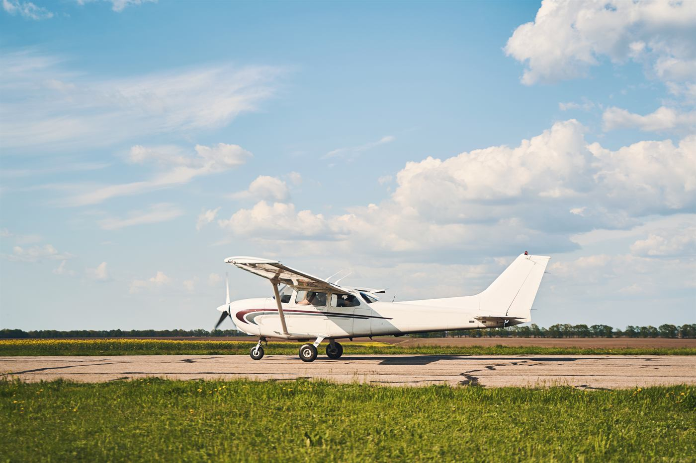

학비 비교는 대개 통합니다. 학비가 곧 총비용이니까요. 조종 과정은 예외입니다. 학비 줄만 읽고 계획을 세우면 AUD 100,000 넘게 어긋나는 유일한 분야입니다.
숫자가 하나가 아닙니다
UNSW는 두 숫자를 자기 코스 페이지에 함께 공시합니다. 학비는 학위에 대한 값이고, 비행훈련은 별도 청구입니다.
| 항목 | 금액 (국제학생) |
|---|---|
| 학비 · 첫해 | AUD $62,500 |
| 학비 · 3년 전체 | AUD $348,000 |
| 비행훈련 · 상업용 면허(CPL) + 다발계기한정 | AUD $154,500 |

그리고 훈련비에는 조건이 붙습니다. 최소 면허 기준의 예상 표준 비용이고, 비행 200시간을 넘겨야 하면 더 듭니다. 몇 시간이 필요할지는 미리 약속할 수 있는 종류의 것이 아닙니다.
입학도 성적만이 아닙니다
2026년 최저 선발 순위는 ATAR 80이고 수학(Advanced)을 전제로 봅니다. 여기에 항공적성검사(AAT)와 CASA 1종 신체검사가 붙습니다. 먼저 확인해야 할 건 신체검사입니다. 이 목록에서 공부로 해결할 수 없는 유일한 항목이기 때문입니다.
비행하지 않는 항공 학위
같은 학교가 항공경영 학사를 연 AUD 61,000에 운영합니다. 비행훈련이 붙지 않습니다. 조종석이 아니라 항공사 운영·공항·안전관리 쪽으로 갑니다. 조종석이 아니라 업계에 끌린 학생이라면 이 선택지를 일찍 올려 두는 게 좋습니다. 비행훈련비를 확인한 다음에 꺼낼 카드가 아닙니다.
다른 조종 과정을 볼 때
호주의 다른 대학도 조종 과정을 운영하고, 공시 연간 금액이 UNSW보다 훨씬 낮아 보이는 경우가 있습니다. 비교하기 전에 각 학교에 한 가지를 물으세요. 이 금액에 비행훈련비가 들어 있습니까? 문서로 답을 받기 전까지 두 숫자는 같은 종류의 숫자가 아니고, 비교할 수 없습니다.
한 줄로 정리하면
조종 과정의 예산은 학비 + 훈련비로 잡으세요. 1종 신체검사를 무엇보다 먼저 확인하고, 항공경영 학위는 차선이 아니라 진짜 선택지로 남겨 두세요.